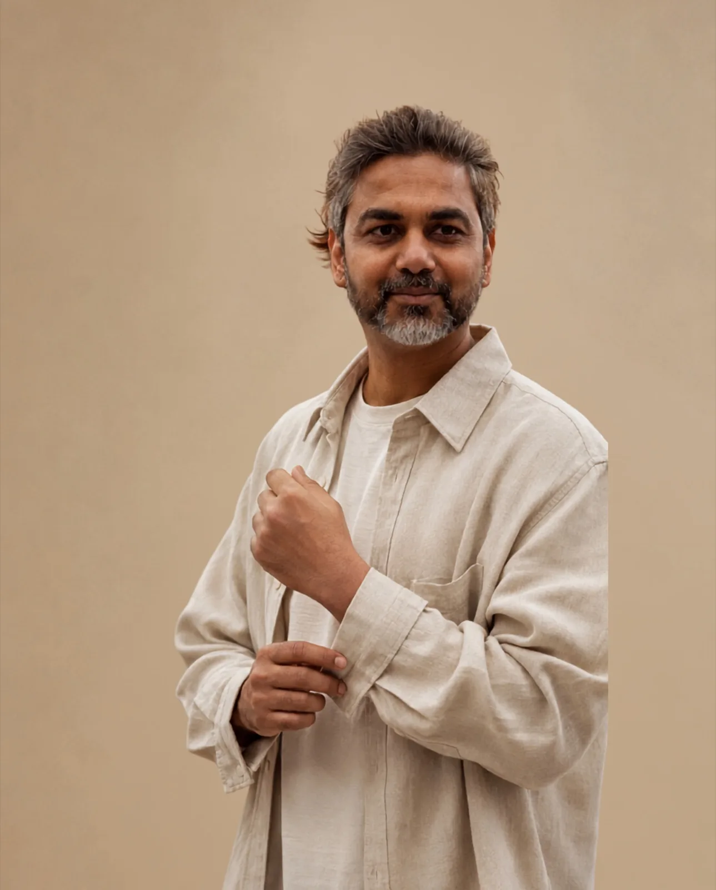

Context before prescription
I want to understand the history, relationships and definition of enough before offering a view.
Global business coach · Founder · Operator
Not just the commercial answer. The people, history, ambition and consequence wrapped around it.

Why coaching
I am not trying to be the cleverest person in the room. My work is to hold the whole context, ask the question others may avoid and notice when the obvious answer is protecting an old assumption.
Good counsel does not borrow the founder's authority. It sharpens judgment, tests the trade-offs and leaves the final decision exactly where it belongs.
The private room
Privacy is not a line in a service description. It is what allows the real question to enter the room.
I want to understand the history, relationships and definition of enough before offering a view.
You will know what I believe, what I question and where the evidence remains incomplete.
Good counsel should strengthen judgment, not create dependence on advice.
The wider practice